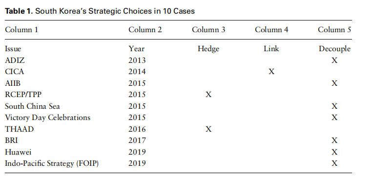
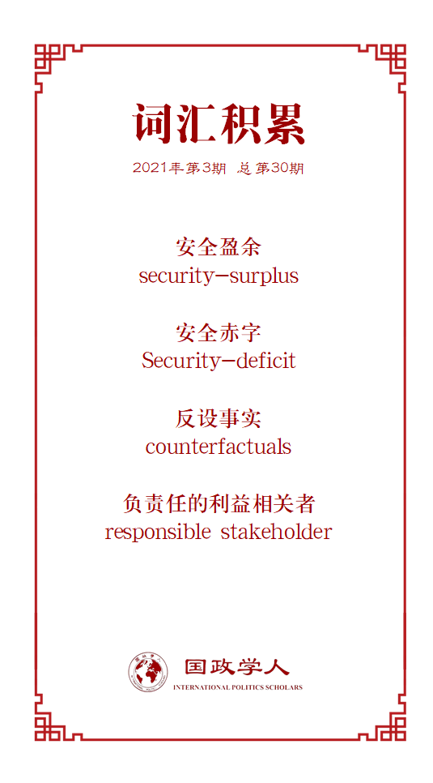

收录于合集

作品简介
【作者】 车维德（Victor D. Cha）：乔治城大学政府和外交学院教授，华盛顿特区战略与国际研究中心（CSIS）亚洲事务高级顾问兼韩国事务主席。
【编译】 赵怡雯（国政学人编译员，山东大学国际政治与经济系）
【校对】 胡可怡
【审核】 廖泽玉
【排版】 黄晨蕊
【美编】 游钜家
【来源】 Cha, V. D. (0). Allied decoupling in an era of us–china strategic competition. The Chinese Journal of International Politics(4) , 4.
【归档】 《国际关系前沿》2021年第3期，总第30期。
期刊简介
创刊于2006年的《中国国际政治杂志》（The Chinese Journal of International Politics）是牛津大学出版社发行的学术季刊，以现代方法论为基础研究国际关系，也发表历史研究和政策导向的论文，主编是孙学峰。该期刊大部分文章或与中国有关，或对中国的外交政策有影响。
中美战略竞争时代的联盟脱钩
Allied Decoupling in an Era of
US–China Strategic Competition
车维德（Victor D. Cha）
内容摘要
中美公开竞争关系的建立很大程度上影响了美国对朝鲜和对韩国的政策。美国制定与中国的竞争政策，其产生的军事经济需求使美国与其盟友韩国之间的政策变得复杂。因为这加剧了韩国在对华问题上的三个核心困境，韩国的选择在本质上更加零和，即必须在盟友和邻国之间进行二元选择。
本文主要探讨中美关系的变化如何影响朝鲜半岛两国的战略，作者发现中美关系（自变量）对韩国和朝鲜的战略思维（因变量）的影响是截然相反的：中美关系变化给韩国带来可能认为是机会的部分，但被朝鲜视为威胁；相反中美关系变化为朝鲜创造的机会则对韩国构成威胁。
文章导读
01
简介
中美间战略竞争关系逐步公开化，这一转变极大地改变了亚洲国家目前的运作模式。各国需要在中美之间从基础设施到海上安全、5G等各领域做出二元选择。 本文探讨了两个问题：一是当霸权国家和新兴大国在零和框架下运作时，地区大国应如何应对？二是中美战略竞争会如何影响美国在该地区的盟友与伙伴的选择？ 是寻求“中立”还是采取某种形式的对冲？是选择与美国联结，还是与其脱钩而选择中国？美国盟友的双重选择以及由此产生的不同政策将对美国在亚洲的整体地位产生影响。
本文以韩国为研究对象，探究其夹在中美两国之间所面临的困境，以及对冲、脱钩或关联行为可能发生的条件。韩国是美国的传统军事盟友，但同时，这一安全关系因韩国在经济上对中国的依赖而变得复杂。韩国拥有二战后与美国相同的自由民主价值观，同时也深受中国儒家传统思想的影响。从地缘上看，韩国既认同美国是在亚洲的主导性海洋强国，又认同中国在欧亚大陆上主导性陆上强国的地位。因此在衡量美国和中国对盟国决策的相对影响力方面，韩国是一重要例证。同时可以探究二元选择将会如何影响亚洲国家。如果韩国在与美国形成同盟的情况下仍向中国倾斜，那么这意味着其他与美国关系不那么紧密的伙伴也会做出同样选择。
本文通过对十个二元选择案例的分析得出以下发现： 一是当中美同时施压时，韩国大多数情况下（70%）选择偏向中国。二是中美关系的变化对韩国和朝鲜的战略思维有相反的影响。三是中美日益激烈的竞争使朝核问题的解决更加困难，因为这抑制了美朝的合作，并拉近了中朝关系。
**
**
文章简要回顾了中美关系变化对朝鲜半岛局势的影响，给出了中美关系的基本频谱，进而对自变量与因变量之间的因果关系提出四个假设。就此解释了中美关系不能通过在朝鲜无核化问题上的合作来改善的原因。作者利用从档案和访谈中获取的原始资料，选取了十个韩国面临的二元选择案例，并对事件结果是联结、脱钩或对冲进行编码。最后讨论了盟友做出选择的潜在原因。
02
中美关系的竞争转向
二战后美国对中国的战略在不断发生变化，这与中国形成了鲜明对比。中国在和平崛起成为全球大国的过程中一直遵循相对一致的模式，即专注发展经济现代化。两种模式的结合导致了中美从合作到竞争的一系列政策结果。
合作
合作的一端是寻求中国在国际体系中崛起的正和解决方案。自尼克松对华开放以来，西方近五十年的政策旨在激励中国成为国际体系中负责任的利益相关者。尽管往届美国政府往往会指责上任政府对中国的政策过度宽松，但最终都归于与前任相似的务实接触政策。
最初是克林顿政府时期的经济激励手段（最惠国待遇）。而后的小布什政府提出“负责任的利益相关者”概念，承认了中国的大国地位。虽然意识到中国构成的潜在威胁，但美国试图用非零和的方式构建中国崛起的概念，即中国的崛起会促进美国主导的国际规范和秩序。强调坦诚、合作和建设性的中美关系下存在的合作潜力。在此框架下，美国在1970年代给予中国最惠国待遇，支持中国加入世界贸易组织，建立了高层双边经济对话，并签署了双边投资条约。奥巴马政府成立之初，美国就以“两国集团”（Group of Two）的概念明确主张建立一个更加合作的框架。在气候变化至防核扩散等问题上使中国在美国的全球议程中发挥重要作用。
虽然不同总统任期内的对华战略各有其独特之处，但总的来说都属于中美关系的合作模式。在“接触和对冲”、“战略伙伴关系”的混合框架下，虽然这些战略都承认在某些特定的领域，中美之间存在竞争，但这些竞争均被嵌入一个更广泛的框架。在这一框架中，美国 一接受中国不可避免地崛起为强国；二在公共产品领域采取正和的解决方案；三预测中国将遵守战后的自由主义国际秩序；四寻求加深高层的制度联系，如战略与经济对话，与领导人建立关系，试行双边战略伙伴关系。
中国学者认为中国的和平崛起政策遵循一贯的模式，即经济增长优先需要一个相对良性的外部环境。中国推行以促进经济增长为首要目标，且避免卷入外部事务的战略，认为与美国建立一种非对抗性的关系，对于建立基于以美国需求为出口导向型的经济增长十分重要。“和平崛起”要求中国向西方及其邻国保证，中国不会寻求地区霸权，中国将“隐藏实力，等待时机”。
竞争
竞争的一端则是将中国崛起视为零和博弈的政策，并在经济和安全领域将中国视为实质上的威胁。对美国来说，朝这个政策方向迈进源于一种认识，即认为与中国合作的议程的核心要素已被证明不起作用。首先，中国崛起在经济上带来的好处与危害等同。其次，中国的崛起并没有转变为公共产品，以美国的定义，中国没有为维护国际体系做出更多贡献。其三，自由主义定义下中国转型的理论并未被证明是正确的。最后，中国的崛起也使另一个自由主义下的推断站不住脚，即认为中国政府将意识到遵循美国主导的国际秩序会比推翻或修改这一秩序的成本更低。
合作模式的失败，虽然一定程度上是中国行为变化导致的，但也代表了美国开始怀疑所有发展中国家都想向美国看齐这一想法是错误的。
美国公开承认与中国由“负责任的利益相关者模式”转变为一种“长期的战略竞争对手模式”。这一模式下的一种观点强调遏制中国，另一种观点则强调保持并增强美国的自身实力以遏制中国主导国际体系。这两方均采用零和思维，认为中美之间的竞争将是长期性的。
在中美关系上，各种观点都在试图回答一个长期存在的问题：一个占主导地位的大国和一个正在崛起的挑战国是否能够避免所谓的“修昔底德陷阱”，即权力竞争和不安全感的螺旋式上升是否会不可避免地导致大国战争。
03
韩国的对冲
该地区两个最大的大国——美国和中国之间关系的转变不可避免地会产生结构性的影响，促使邻国的政策变化。虽然朝鲜半岛的分裂是美苏竞争的产物，但真正对朝鲜半岛形势产生深远影响的是中美之间竞争程度的变化。
中美关系对朝鲜半岛局势的影响体现在对韩国历史至关重要的事件、反设事实（counterfactuals）和被期望但未实现的事上。例如1949年12月艾奇逊和乔治凯南决定将韩国排除在美国的亚洲防御圈外，这很大程度上是基于美国认为中国在可预见的未来没有对朝鲜半岛进行力量投射能力的评估，这成为导致朝鲜战争的一个因素。1972年2月，尼克松总统访问中国，中美关系恢复正常，这引起了朝鲜和韩国被抛弃的恐惧。这促使金正日和朴正熙派遣人员秘密谈判，促成1972年7月4日第一次朝韩会议和南北联合公报。1989年以美国为首的对华制裁导致中美关系走向低迷，促使韩国发出愿意与中国合作的可信信号。韩国利用体育外交支持北京亚运会，并最终在1992年与中国实现邦交正常化。实际上几乎每一个中美关系的重大转变都导致了韩国外部环境的变化，从而产生结构性力量推动影响韩国安全的政策的改变。
与韩国类似的美国盟友偏向于不在中美之间做出选择，而是更乐于审时度势，双管齐下。另外，韩国认为两国关系的价值不仅局限于这些至关重要的平衡。七十多年来，韩国一直依赖美国的安全保障，同时也将美国视为主要的贸易投资伙伴，并与其共享民主价值观，也因此在公共产品领域获得了部分全球领导力。
在1992年中韩关系正常化之前，韩国对中国采取的是单向度的冷战政策。然而1980年代开始，中国日益成为韩国最重要的经济主体。2004年中国超过美国成为韩国最大的贸易伙伴后，这一趋势变得尤为明显。中国对韩国的重要性不仅体现在经济市场方面，还体现在中国对朝鲜的影响、环境问题的合作、拥有共同的儒家文化，以及其与韩国千年的历史文化纽带等方面。因此大多数学者认为如韩国这样夹在中美之间的国家总是更愿意采取对冲策略。
作者并非不同意韩国偏好对冲这一观点，但这些研究成果没有充分承认中美关系的性质在不断变化，以及这种变化可能给韩国的选择带来的零和限制。有两个问题值得关注，第一是错误地从过去推断未来。学者们认为韩国将继续采取对冲是出于一直以来的历史偏好。然而随着形势的变化，套期保值并不总是可行。
第二个问题是，用来论证对冲的证据是轶事，并引用了一些具体案例，如韩国加入《跨太平洋伙伴关系全面进步协议》（CPTPP）和中国支持的区域全面经济伙伴关系（RCEP）。这样的案例仅能够证实对冲的论点，但是研究的开展需要更广泛的案例，以了解在诸如联结和脱钩等其他背景下的对冲。这些研究并没有提供一套系统的实证案例来考察韩国实行对冲决策的频率，也没有解释这样的选择是如何且为何做出的。
04
三个困境
美国在亚洲所有的军事盟国中，韩国与中国的关系最为复杂。这反映在三个与实力或地理、经济和贸易、朝鲜半岛统一相关的战略困境中。
韩国面临的第一个困境是权力困境。中国是韩国的邻居，两国在实力上的巨大差距促使韩国对中国崛起及其所带来的影响产生担忧。同时，地理上的临近放大了韩国相对于中国的实力困境。而这一地理现实将导致不安全感的螺旋式上升，并可能会迫使韩国在中美竞争下转向一种平衡动态。
然而，韩国面临的另外两个困境——经济困境和统一困境削弱了这种平衡动态。经济困境导致韩国的经济未来与中国息息相关，而其战略未来与美国息息相关。2014年6月亚太地区研究专家的调查显示，86%的韩国专家将中国视为韩国未来10年最重要的经济伙伴。两国间的双边自由贸易协定、两国共同参与的区域全面经济伙伴关系协定、中日韩自贸区等都反映了中国的经济吸引力，这使韩国的平衡冲动变得复杂。
另一使选择变得复杂的困境是统一困境。韩国认为有必要在朝鲜半岛统一的最终目标上获得中国的战略理解。在韩国存在这样的共识，即中国在有效应对朝鲜日益增长的安全挑战和半岛统一方面发挥至关重要的作用。
这一困境的症结在于，尽管中国和韩国都支持朝鲜半岛无核化，但中国不可能放弃朝鲜，因为中国在朝鲜半岛的核心地缘战略利益与朝鲜政权的可持续性直接相关。中国担心如果半岛由韩国统治，那么中国会失去朝鲜这一缓冲区，直面美国在韩国的军事存在。
这种与中国保持平衡与合作的冲动交织在一起，成为一种默认的偏好，即不愿在美国和中国之间“选择”。因此韩国的理想战略是在邻国和盟友间“对冲”，使韩国成为两个大国间的“桥梁”。这意味着既不向美国解盟（dealignment），也不转向与中国进行利益结盟（alignment）；意味着与美国紧密结盟的同时，开放地与中国进行战略合作。
韩国的战略选择主张
总的来看，韩国面临的实力、经济和统一这三个战略困境和中美关系的基调相互交织。基于此判断，作者提出两个假设：
假设1：中美为合作关系，韩国则出现安全盈余（security-surplus）。此时韩国倾向于对冲和搭桥，而非在两大国间做选择。
假设2：中美为竞争关系，韩国则出现安全赤字（security-deficit）。对冲空间更小，迫使韩国在两大国间做出选择。
**
**
从中美两个大国的角度，两个假设中的动态也有意义。如果中美为合作关系，那么韩国的战略价值不会成为两国迫切关注的焦点。因此给韩国更多的对冲空间，而不是必须在中美之间进行二元选择。在中美战略竞争激烈的时期，韩国的战略价值受到重视，对韩国的影响也更大。
05
朝鲜的平衡
朝鲜的默认战略偏好是寻求与中国的紧密结盟。朝鲜将中国视为唯一一个真正关心其政权存续的地区大国。
尽管朝鲜对中国的安全需求显而易见，但这种依赖的本质和动态比表面上看起来更加复杂。朝鲜并不完全信任中国，仍担心中国会放弃它。朝鲜明白其政权的崩溃将给中国带来严重的战略不确定性，而中国将尽最大努力避免这种情况发生。因此朝鲜有时会利用中国对朝鲜脆弱性的担忧，在与这个强大的邻国讨价还价时采取一种”要么救我，要么自杀“的策略，使其充当筹码。这体现在朝鲜自主发展核武器等事件上。
中美关系的变化直接影响朝鲜的政策选择，就此，作者提出以下假设：
假设3：中美为合作关系，则朝鲜会出现安全赤字，持被中国抛弃的恐惧。
假设4：中美为竞争关系，则朝鲜会出现安全盈余，朝鲜有加强与中国关系的机会。
**
**
朝鲜将以两种方式应对中美竞争：（i）附和：通过批评美国和日本的言论和行动与中国进行政策协调，并显示对中国的忠诚（allegiance）（ii）利用：不时与美国进行外交接触以强化中国对其的关注。美国前总统特朗普与朝鲜领导人金正恩的首脑会议外交充分展现了后一种战略意图。
06
案例研究
本文的案例研究集中对假设2进行探讨，即在中美战略竞争新时代，韩国如何应对二元选择。 韩国倾向于何方对亚洲的均势具有战略意义。若韩国向中国倾斜，那么美国在亚洲的整体地位将被削弱。同时，其盟友与此类似的战略倾斜也被美国视为其对华全面战略竞争中影响重大的不利因素。
表1列举了韩国被迫在中美之间进行选择的十个事件，以提供一套系统全面的案例对对冲或联结的行为进行分析。在此，案例的选取遵循三个标准：（1）中美持相反立场；（2）中美均明确向韩国传达在这一问题上的立场；（3）韩国在两者之间做出了明确的选择。

从表中看出，70%的案例表明韩国与美国的立场脱钩，更倾向于与中国达成共识。这一发现与以下假设相悖：在中国施压的情况下，美韩立场仍保持一致。
07
可能性解释
本文探讨了美国的盟友在中美竞争下如何进行选择的问题。作者基于一个更全面的实证基础对其进行解释。这些发现会使美国政策制定者感到不安，如果诸如韩国的前线盟友在70%的最近的案例中倾向于中国，这意味着其他亚洲国家也可能会采取相同的应对方式。
由此而产生的问题是影响韩国进行选择的决定性因素是什么？一般而言，当二元选择在安全问题时，韩国会选择其盟友，而当经济问题上面临二元选择时，韩国会选择其主要的经济庇护者。事实确实如此吗？案例与这一结论并不一致。无论是防空识别区、自由开放的印度太平洋，还是萨德问题，韩国均采取了对冲战略而非坚定地与美国的立场保持一致。
关于影响韩国选择有哪些因素，作者提出了四种解释：一是在2013年前美国并未将二元选择强加给韩国；二是与韩国国内政治有关，韩国国内进步派对过度依赖盟友持担忧态度，并倾向于对中国采取温和的政策；保守派往往采取亲美的立场。因此在七个脱钩的案例中四个发生在保守派执政时期，三个发生在进步派执政时期；三是美国往往会在关乎中国利益的问题上与韩国结盟，且韩国在选择与中国结合后，会在其他事件上补偿美国；四是与中国的胁迫策略有关，中国通过经济制裁针对与自身意愿相悖的国家，而美国不会在盟友脱钩时进行制裁。但并没有足够的证据来证明这一点。
08
结论：战略的外部效应
当霸权国家陷入双边零和竞争时，较小的国家应该如何应对？是忠于盟友还是与盟友脱钩？本文以中美关系的变化为自变量，对其如何影响韩国的选择提出四种假设。本文的贡献是丰富了在探讨“中美关系竞争转向对地区国家政策选择的影响”中的实证研究。
如果美国将与中国双边关系的重点放在竞争上，可能会削弱美国在亚洲地区的同盟支持。如韩国这样的军事盟国频繁脱钩，这一趋势无疑会削弱美国在亚洲的整体地位。
译者评述
自特朗普政府以来，美国为实现自身利益的最大化，公开承认中美转向公开竞争关系。而中美是朝鲜半岛局势变化最大的外部影响因素, 对半岛发展方向与命运起到重要作用。韩国作为美国的传统军事盟友，既想要依靠美国降低不安全感，同时不愿放弃与中国在经济等各领域的合作。中美战略竞争的长期走向给美韩这一不对称同盟增添更多不稳定性。
本文对韩国的案例研究弥补了“大环境下盟友如何进行战略选择”的实证分析部分，但同时作者也指出有其他影响选择的因素。可以窥见的是面对二元选择时盟国并非一定选择抛弃部分利益而与盟友紧密捆绑。中美战略竞争给地区带来更多的不确定而非问题的解决。
词汇整理

文章观点不代表本平台观点，本平台评译分享的文章均出于专业学习之用, 不以任何盈利为目的，内容主要呈现对原文的介绍，原文内容请通过各高校购买的数据库自行下载。
好好学习，天天“在看”
国政学人
支持学术公益与知识传播
微信扫一扫赞赏作者 __赞赏
已喜欢，对作者说句悄悄话
取消 __
发送给作者
发送
最多40字，当前共字
上一页 1/3 下一页
长按二维码向我转账
支持学术公益与知识传播
受苹果公司新规定影响，微信 iOS 版的赞赏功能被关闭，可通过二维码转账支持公众号。